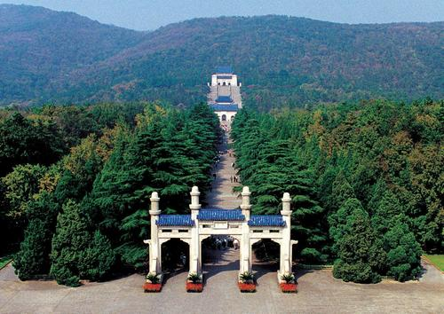
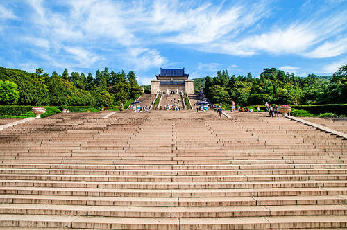
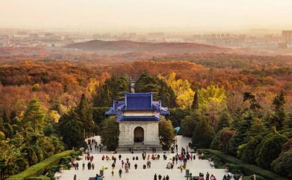
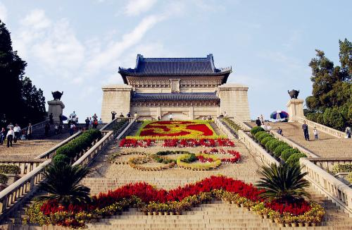
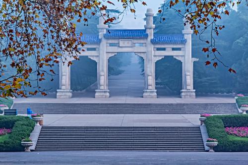

- 
- 
- 
- 
- 
中山陵
成人票：3元/人；学生票：2元/人；儿童票：1元/人
简介
南京中山陵是中国现代历史伟大人物孙中山先生的陵墓，位于江苏省南京市玄武湖畔的紫金山上。作为中国近代史上的杰出政治家、革命家和国父，孙中山先生对于中国的民主 革命和国家建设做出了重要贡献。
中山陵的建筑规模宏大，整个陵园占地约80多万平方米，由大型石质牌坊、祭堂、墓道、墓室和纪念碑等组成。陵园的设计融合了中西方建筑风格，展现了中国传统文化与现代 思想的结合。
南京中山陵是中国近代史上重要的纪念建筑之一，也是中国人民对孙中山先生的崇敬和缅怀之地。它不仅是一座具有历史意义的陵墓，更是一座展示中国现代历史和文化的重要 景点。每年都吸引着大量的游客和学者前来参观，了解中国近代史和缅怀伟大的国父。
先生逝世
孙中山逝世后，遵照孙中山的遗愿，遗体在协和医院进行防腐处理后，暂厝在北平香山碧云寺，待陵寝建成后再安葬南京。在守灵人尽职护卫下，才免遭不测。
孙中山生前，曾经吩咐葬礼仪式和棺木式样仿照列宁的格式，让民众瞻仰遗容。可当孙中山逝世时，苏联赠送的玻璃钢棺材没能及时运到，只好暂厝在西式玻璃盖 棺木棺内，停放在北平香山碧云寺石塔之中。1925年3月30日，苏联政府送来玻璃钢棺材时，孙中山先生的遗体已入殓半个多月，由于当时技术原因防腐措施不当，遗容 不能再供后人瞻仰，只好改为土葬。
陵墓选址
早在民国元年（1912年），孙中山在南京就任临时大总统时， 曾几次到过紫金山。1912年3月10日，孙中山先生辞去临时大总统职务之后，与胡汉民等人到紫金山打猎。他看到这里背负青山，前临平川，气势十分雄伟，笑对左右说 ：“待我他日辞世后，愿向国民乞此一抷土，以安置躯壳尔。”
孙中山先生灵榇暂厝碧云寺。孙中山早就表示希望百年后葬于紫金山，在弥留之际，仍以归葬南京紫金山嘱咐家属及侍疾者。孙先生有遗嘱：“吾死 之后，可葬于紫金山麓，因南京为临时政府所在地，所以不忘辛亥革命也。”遵照孙中山遗愿，灵枢暂厝于北平香山碧云寺内，在南京钟山修建陵墓。

陵墓设计
1925年5月2日，葬事筹备委员会确定奖金总额为5000元。
5月13日，葬事筹备委员会通过了由孙科与负责工程的常务委
员宋子文的建筑顾问赫门起草的《陵墓悬奖征求图案条例》。
5月15日，葬事筹备委员会在报纸上发布公告，悬奖征求中山陵
墓设计图案。葬事筹备委员会在《条例》中对陵墓的性质、功能、建筑风格、建筑材料
等都做出了规定：首先，陵墓要体现“特殊与纪念之性质”；其次，祭堂和墓室要便于公
众入内瞻仰，祭堂外要有可立五万人的空地以举行大型纪念活动；再次，祭堂建筑风格
必须为“中国古式”，或者“根据中国建筑精神特创新格”；最后，为了建筑的永久保存，
要求使用石料和钢筋三合土，不用砖木材料；《条例》还要求陵墓建筑应简朴庄严，不求
奢侈华贵。
原定8月31日截止，为期3个半月，后来因海外应征者要求延期
而延至9月15日截止。
到9月15日止，共收到应征图案四十余份，全部陈列于上海大洲
公司三楼，从9月16日起到9月20日止，由葬事筹备处敦请评判顾问到陈列室阅览评判。
评判委员会成员包括全体葬事筹备委员、家属代表，并聘请四名专家为顾问，即土木工
程师、南洋大学校长凌鸿勋、德国建筑师朴士、中国画家王一亭、雕刻家李金发。
1925年9月20日，在上海四川路大洲公司三楼召开了葬事筹备委
员及家属联席会议，对应征图案进行评判。出席会议的有宋庆龄、孙科及夫人、林焕廷、
叶楚沧、孔祥熙、陈去病、杨杏佛。特聘评价顾问也都在前一天写了书面评判报告，由杨
杏佛在会上报告了顾问们的评判结果，大家对第一、第二两奖意见一致，但对第三奖有不
同看法，最后表决，通过了得奖名单：大奖吕彦直；二奖范文照；三奖杨锡宗。名誉奖：
1.孚开洋行乃君（Cyrill Nebuskad）；2.赵深；3.开尔思（Francis Kales）；4.恩那
与佛雷（C.Y.Anney and W.Frey）5.戈登士达（W.Livin Goldenstaedt）；6.士达打洋
建筑公司（Zdanwitch and Goldenstaedt）等。